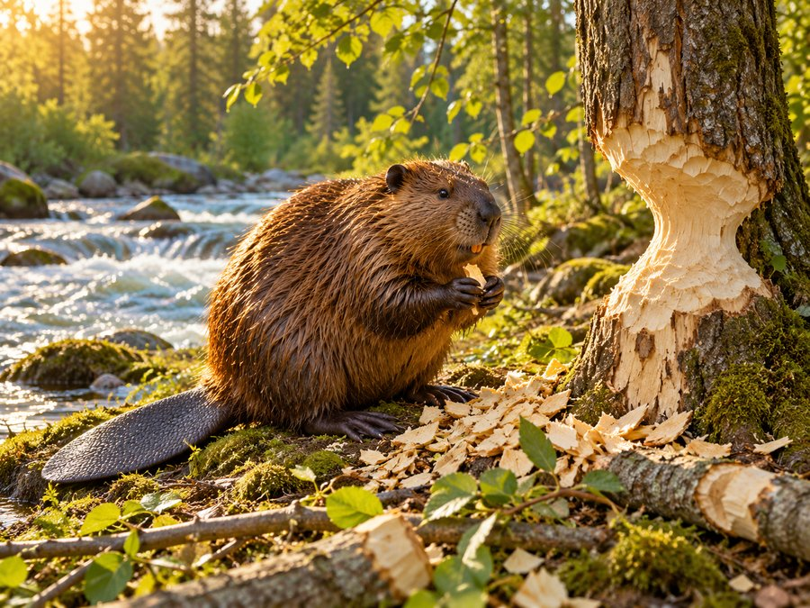
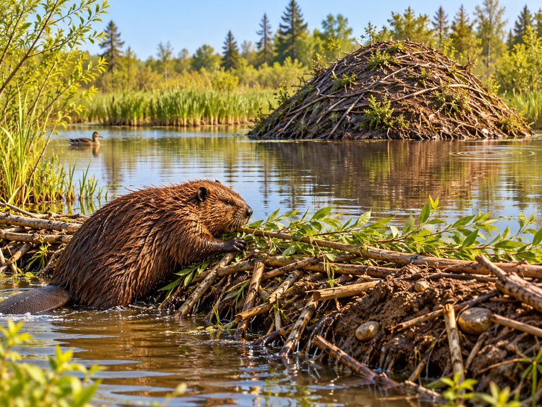
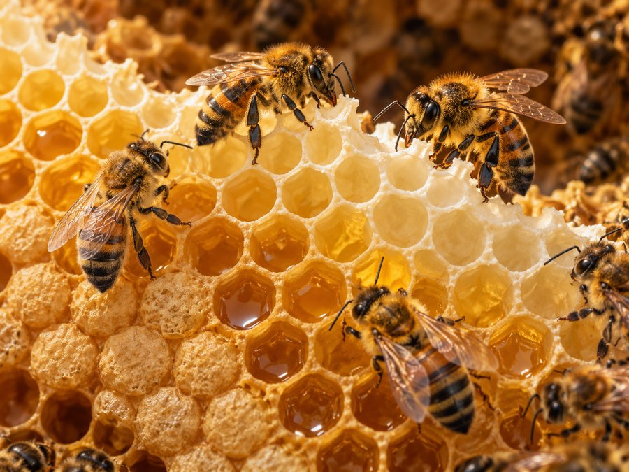
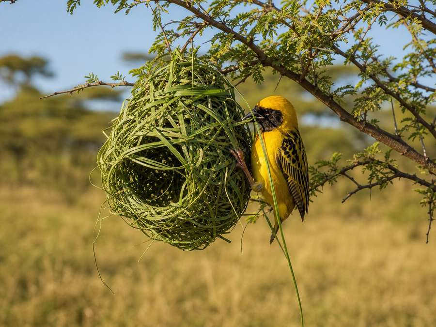
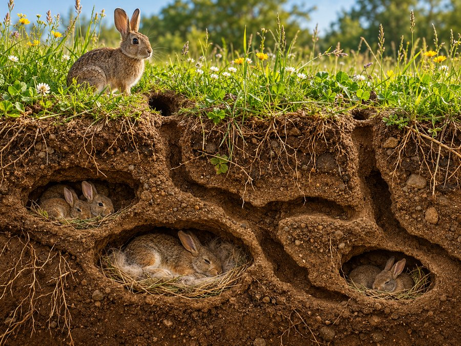
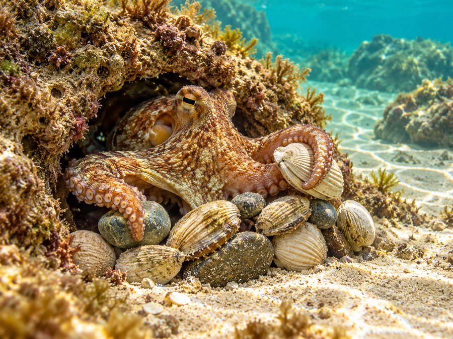
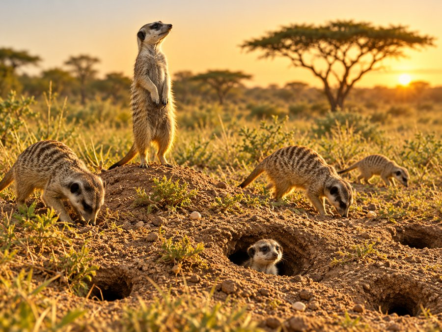
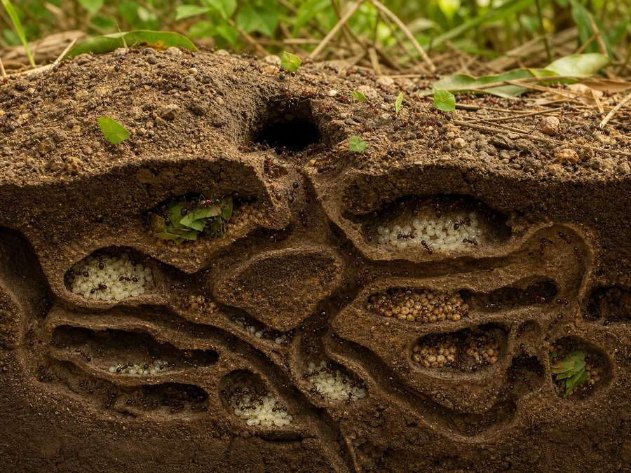
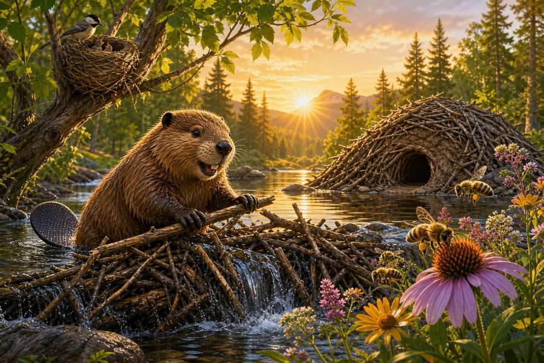

10 printed pages · 1.5 MB · A4 or US Letter. Download PDF · Open PDF to printOpens in a new tab. Use the PDF viewer's Print control. To use less ink, read online and choose only the questions on page 10 in Print.

Page 1 of 9
Nutmeg Squirrel here! I collect acorns, but today I am collecting ideas. Animals build without rulers, cranes, or hardware shops. They use mud, sticks, wax, leaves, stones, and even bubbles. Each home must solve a problem: stay warm, hide babies, store food, or escape danger. Our first blueprint waits beside a rushing river. Who left those tooth marks on the trees?

Page 2 of 9
A beaver did it! Its front teeth never stop growing, so gnawing wood keeps them useful. Beavers push branches, stones, and mud into moving water. The dam slows the current and forms a pond. In that safer water, the family builds a lodge with an underwater entrance. A whole wetland can grow around one busy family’s work. What neighbours might move in next?

Page 3 of 9
Buzz over here. Honeybees build comb from wax made by their own bodies. Each cell has six sides. Hexagons fit together without wasteful gaps, making a strong nursery and pantry with surprisingly little wax. Worker bees shape the warm wax together, antennae tapping as they measure. No single bee sees the whole plan, yet the colony creates one. Can teamwork be a building tool?

Page 4 of 9
High in the branches, birds weave with beaks instead of hands. A weaverbird knots long grass around a twig, then threads more strands through the frame. The hanging nest sways, but it does not fall. Other birds use moss, feathers, spider silk, or mud. The best material is often the one nearby. If your hands were a beak, what could you weave?

Page 5 of 9
Below the meadow, rabbits dig a different kind of home. A warren is a network of tunnels with sleeping chambers and several exits. Underground earth softens hot days, cold nights, and noisy danger. Strong front paws loosen the soil while powerful back legs kick it away. From above, the hidden rooms are almost invisible. How many doorways would you give a secret home?

Page 6 of 9
Now dive beneath the waves. An octopus chooses a rocky den and carries shells or stones to its doorway. Some arrange the pieces like a wall; others pull them close like a shield. With no bones, an octopus can squeeze through a gap barely wider than its beak. Its shelter may look messy to us, but every object has a job. Is tidy always the same as clever?

Page 7 of 9
On the dry grasslands, meerkats share an underground fortress. Their burrows can have many entrances, rooms, and levels. While some forage, a lookout stands tall and warns the group about danger. The tunnels offer cool shade and a fast escape. Meerkats sometimes reuse burrows first dug by other animals. Could sharing an old building be smart architecture too?

Page 8 of 9
Even tiny builders reshape their world. Ants carry grains far heavier than they look, opening tunnels that let air and water move through soil. Some nests have nurseries, food chambers, and rubbish areas. The colony follows scent trails instead of a foreman’s instructions. One ant moves one crumb; thousands create a city. What big thing could many small actions build?

Page 9 of 9
Our plans are complete: slow the water, fit shapes tightly, weave flexible fibres, dig extra exits, and reuse what already exists. Animal architects do not build for applause. They build because a good home helps life continue. Next time you see a nest, web, mound, burrow, or dam, pause before passing it. You may be looking at someone’s greatest invention. What will you notice first?
The end · Great reading
Why does a beaver build a dam?
Show the answer
The dam slows the river and turns it into a pond. In that safer water the beaver family builds a lodge with an underwater entrance.